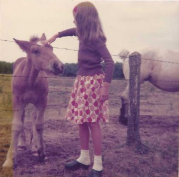
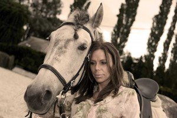
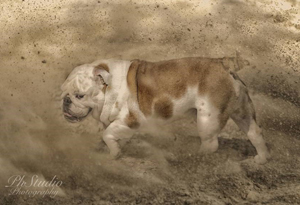
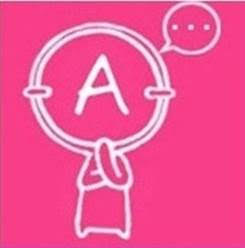
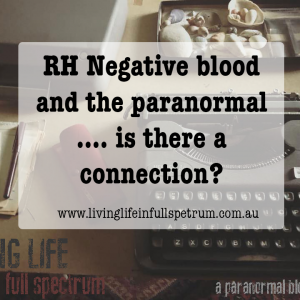
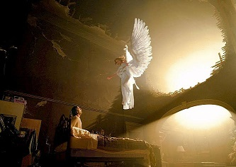
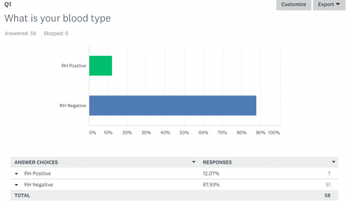
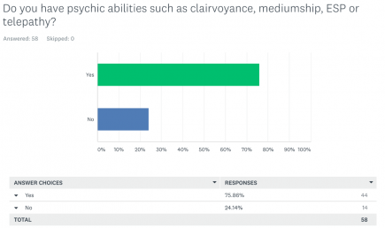
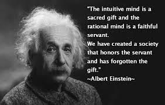
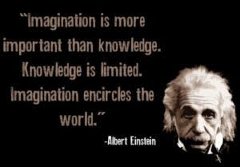

Née en 1969, depuis ma tendre enfance je suis entourée d’animaux en pleine campagne,au Sud de Nivelles, élevée à la façon ‘Manon des Sources’, un peu sauvageonne, les enfants de mon âge ne m’intéressent pas,je passe des heures avec les chiens, les chevaux, et à lire, ces êtres me parlent et très vite je les comprends !
La télépathie fait déjà partie de ma vie….

Les aléas de la vie ne me permettent pas des études universitaires, le choix de mes formations scolaires me guide vers Bruxelles où je subis tant bien que mal divers formations, cursus, professions et aussi une vie qui ne me reflète pas du tout comme la diététique dite médicale (où on vous apprend à découper de la chair animale), la psychanalyse Lacanienne, Freudienne,(la mode, le monde de la pub pour payer mes formations)….etc.…. C’est en 2004 que ma vie prend un autre chemin suite au décès de maman, je refoule cette vie superficielle, d’ailleurs ma décision sera fatale : je quitte à tout jamais Bruxelles, car encore une fois je ne jouais là qu’une comédie au quotidien pour retrouver mes vraies valeurs : ma campagne, mes terres, mes chiens me suivent dans cette vie nouvelle. Mon futur est ici loin des projecteurs, j’en arrive à fuir toute obsolescence et le végétarisme prend place dans ma vie au quotidien ainsi que la télépathie c’est-à-dire cette communication avec l’autre, l’au-delà ….Qui s’est réveillée lors du cancer de ma maman et de savoir quand elle allait s’éteindre exactement….
De là je me rends compte de mes dons et d’autres médiums me le font reconnaître aussi !.
Au départ ce sont les animaux qui m’ont donc fait comprendre mes pouvoirs et ensuite grâce à mes formations (CREYDA , IFBB, CBF, séminaires…notamment, ….) j’ai compris qui j’étais et comment je pouvais vous sortir de la souffrance car depuis ma tendre enfance je ne supporte pas l’injustice, la souffrance d’autrui qu’elle soit morale, physique, animale, humaine. Mon but sur terre est de ‘faire du bien autour de moi ‘
Enfin à 49 ans suis comblée : ma vie est parmi eux, je les comprends si bien, est-ce inné ou bien dû aux quelques leçons d’éthologie de Monsieur Pierre Deschamps, et à mes diverses lectures* dont je cite les références ici même et mon suivis aux séminaires sur le communication intuitive ? Je vous laisse le libre choix de disserter sur le sujet…Tout ce que je puis écrire c’est qu’il m’est impossible de concevoir ma vie sans eux, chaque chien, chaque cheval m’apporte énormément, c’est pour moi un art de vivre, une philosophie, ce sont eux qui chaque matin me murmurent on est là, on t’attend ! Et ce sont eux qui m’ont permis de comprendre et de persévérer dans mes dons de voyance, médium, énergéticienne……Ils m’ont ouvert les yeux !
Je vous souhaite une agréable visite de mon site, à très bientôt peut-être !
Pourquoi suis-je voyante depuis toujours ? car Je fais partie de ces gens (A-) :
Les gens appartenant au groupe sanguin RH négatif ne sont pas d’origine terrestre, et pourraient même ne pas être des humains normaux.
Savez-vous à quel groupe sanguin vous appartenez? Chaque humain sur cette planète est soit de groupe sanguin O, A, B ou AB, et dans ces types, vous avez soit le sang RH positif ou RH négatif. Le système Rhésus (Rh) fait référence à un antigène spécifique dans le sang. Si votre sang n’a pas l’antigène Rh, vous êtes Rh négatif. Mais si votre sang a l’antigène, vous êtes Rh positif. Environ 85% de la population mondiale a l’antigène, et les 15% restant ne l’ont pas et sont considérés comme des «rhésus négatifs».Les personnes appartenant à ce groupe sanguin ne sont peut-être pas d’origine terrestre.
Voici pourquoi : Les groupes sanguins RH négatifs sont l’un des sujets les plus fascinants étudiés par les scientifiques. Dans l’étude de la génétique, nous constatons que nous ne pouvons hériter que de ce que nos ancêtres avaient; sauf en cas de mutation. Par conséquent, si l’homme et le singe avaient évolué à partir d’un ancêtre commun, leur sang est aussi supposé avoir évolué de la même manière. Les facteurs sanguins sont transmis avec beaucoup plus d’exactitude que toute autre caractéristique. Tous les autres primates terrestres ont aussi ce système Rh. Donc, si toute l’humanité a évolué à partir du même ancêtre, leur sang devrait être compatible. Voyez-vous là où on veut en venir? Si nous avions tous évolué du même ancêtre, nous aurions tous dû le même sang.
Ce que nous n’avons pas ! Le Sang de RH positif a peut-être pu être retrouvé chez le singe rhésus et tous les autres primates, mais le sang RH négatif ne l’a pas été. En fait, il ne peut être tracé nulle part ailleurs dans la nature. Voilà qui est étrange ! Un fait tout aussi étrange c’est que lorsque la mère est Rh négatif et le père est Rh positif, le bébé peut hériter du facteur Rh du père. Ce qui fait également que leur progéniture devienne Rh positive. Si cela se produit, la mère RH négative pourrait faire une fausse couche.
Pourquoi ?
Pour la même raison que vous ne pouvez pas accoupler un Mulet avec une Mule pour procréer un autre Mulet. Tout comme vous ne pouvez pas reproduire une paire de Ligres pour procréer un autre Ligre. Toutes les créatures vivantes connues de l’homme peuvent se reproduire avec n’importe quelle autre de leurs espèces. La taille et la couleur ne fait aucune différence. Mais, vous ne pouvez pas reproduire deux espèces mélangées ensemble (hybride).
Si vous le faites, vous obtenez quelque chose appelé maladie hémolytique. C’est la même réaction allergique qui survient lorsqu’une mère Rh négative porte un enfant Rh positif. Son sang accumule des anticorps pour détruire une substance ALIEN (de la même manière qu’un virus), détruisant ainsi le nourrisson. Pourquoi le corps d’une mère rejetterait-elle sa propre progéniture? Nulle part ailleurs dans la nature cela ne se produit naturellement. Ce seul fait indique la possibilité distincte d’un croisement entre deux espèces similaires, mais génétiquement différentes.
Des chercheurs ont remarqué que la plupart des hypersensibles/empathes (zèbres, surdoués, HP) sont des gauchers. Tous les gauchers ne sont pas HP et tous les HP ne sont pas gaucher.
Chez ce dernier, le cerveau fonctionne majoritairement à l'aide de l'hémisphère droit, donc plus intuitif, plus créatif, raisonnement différent.. ce qu'on retrouve souvent chez le surdoué/HP/zèbre (vous appelez ça comme vous voulez).
Donc est-ce lié ? Si oui pourquoi ne retrouve-t-on pas cette caractéristique chez tous les HP ?
Après on constate que certains gauchers, ne sont pas de vrais gauchers (intégralement parlant) ce qui peut expliquer que tous les gauchers ne sont pas HP.
Dans un deuxième temps, j'ai remarqué aussi que les êtres éveillés spirituellement sont souvent de rhésus négatif. Et là, personne ne parle de ça. Mais je me suis posée la question, car je me sens concernée.
En interrogeant les gens qui sont éveillés depuis petits mais qui ont traversé une longue période d'inconscience, souvent dû au fait de voir aller dans le sens de notre éducation, puis du système, je remarque souvent qu'ils sont de rhésus négatif.
Souvent, on pense donc que les gens dont le groupe sanguin est A ont un caractère moins fort parce qu'ils ne savent pas faire valoir leurs droits activement. Mais ces personnes sont empathiques et comprennent beaucoup mieux l'opinion des autres. De plus, ils ont aussi le sens des responsabilités. Ainsi, ils obtiennent facilement la confiance des autres, d’autant plus qu’ils tiennent toujours leurs promesses. En revanche, ces personnes sont candides et très crédules. En conséquence, ils leur arrivent parfois d'être manipulés ou utilisés dans leurs relations avec les autres. En général, ces personnes sont indécises, alors, le mieux pour elles est souvent de suivre leur intuition.
Profil du A-
LE PROFIL DE A : LE SÉDENTAIRE
Le plus attachant, celui qui garde et protège. L'esclavagiste. Le suzerain, le roi, la reine. Actif et imaginatif, A possède une grande largeur de vue et sait prendre des initiatives. En lui bouillonne le sens du commandement et de l'autorité. Chaleureux, il demeure fidèle à ceux qu'il admire et possessif envers ceux qui l'admirent. Il a besoin d'admirer pour respecter et obéir. Ainsi, même subordonné, il garde son libre arbitre et son esprit critique. Doté d'un sens aigu de sa propre valeur et d'une ambition dévorante, il ne supporte pas la médiocrité. Comme O, il est attaché aux traditions ancestrales et familiales. A est honnête par raison, car il a un besoin viscéral de vivre en groupe et d'être entouré. En effet, cet égocentrique supporte mal la solitude et recherche les amitiés fidèles. Il procède beaucoup par intuition et analogie, ce qui le rend hésitant, précipité et un peu intolérant. A est dominant, mais manque quelque peu de rigueur. Impatient, il se révèle parfois coléreux et explose. À ce moment-là, il peut être insolent ou cassant. A conteste l'Autorité défaillante et recherche le Pouvoir. Alors, il ment par stratégie, même s'il se sent coupable. Bavard et bruyant, il parle trop. A, qui n'est jamais pressé et remet toujours tout à plus tard, néglige également sa santé. Hyperactif et brouillon, il est émotionnellement vulnérable et s'effondre moralement face à une difficulté affective. Il peut être grossier sans être jamais être vulgaire.
Scientists however believe that the RH negative blood is simply a mutation that happened some time during our evolution. It is believed that we evolved from Apes, this could have happened somewhere along the way. It was actually because of the Rhesus macaque also known as the Rhesus Monkey that we even know about these positive and negative antigens. Scientists discovered that human antigens were similar to that of the Rhesus macaque. Monkey have also shown to have comparable blood types. They are not identical to the A,B and O Blood types that we have, but there are similarities.
What does this have to do with the paranormal?
People who are ‘blue bloods’ are more prone to have a lower body temperature, higher than average IQ, higher blood pressure, red hair and a sensitivity to sunlight according to studies. That is not the only thing they are said to be sensitive in. Some people say that having blood that is RH Negative means that they have elevated intuition and a stronger connection to spirtuality in part due to it's connection with 'The book of Enoch'. Some have a heightened awareness of their surroundings whilst others sense things before they happen. They feel a general connection to the spiritual realm. Due to this connection and it's religious connotations, some people believe that people who are RH negative are able to sense and identify demons (if they exist).
Quite of a lot of people who are RH Negative also seem to have another trait in common. They suffer from Night terrors or sleep paralysis.
Science tells us that sleep paralysis happens when our brain wakes up before our body does. Some people however interpret this as an encounter with a negative spirit or perhaps even something else. Others again put this down to an alien encounter. People who are RH negative are also said to be more likely to be able to have out of body experiences through astral projection because they feel a connection to spiritual world and space.A lot of people who have had ET experiences or abduction stories, seem to have a connecting value. They are often RH negative. Perhaps this is where the theory of Aliens genetically engineering blood comes into play.
As you can see from the results, most of the people who have completed the survey were RH negative and the majority felt they had some sort of ability or sensitivity to the paranormal. Does this show us there is a connection? It is not solid evidence but it is still interesting to see these results. For me looking at these results, the fact that only 7 people that were RH positive answered the survey leads me to think that perhaps the survey was only completed by people who felt they either had an ability or were RH negative so it is not a reliable snapshot. It is still quite interesting to look at though. I also have thrown out the results from the sleep paralysisquestion at the end as it didn't give users the option to answer no so the results for that question were flawed. The way this study was set up will never give us definitive answers. It is just interesting to see what people come up with. I am by no means saying there is a scientific connection. I am not a scientist, I am just someone asking a question to see who answers.
If you would lke to contribute to the survey, click on this link: RH Negative survey . It is one thing to make a claim, it is another to have the data to back it up. So let's create some data!
So what do you think? Do you think your blood type has an influence on your psychic ability? Is it a mutation in our DNA through evolution or some sort of intervention from above? I actually find it quite fascinating looking into the paranormal at this level. There is more paranormal research than standing in a dark room talking to yourself.

ARE RH NEGATIVE PEOPLE MORE INTUITIVE?
Rh Negative Facts
Whether or not the average IQ of rh negatives is higher than that of rh positives, has yet to be proven. When it comes to intuition, different rules apply. Intuition is the ability to understand something immediately, without the need for conscious reasoning. And unlike IQ, intuition cannot easily be measured. Few people would claim that intuition doesn’t exist. But determining it on a scale does seem almost impossible. Or is it? More than anything, intuition does not seem something that you can train as it is what we are born with. It is rather that lack of conscious reasoning allowing our instinct to be our guide. And it also has a lot to do with the energies surrounding us and being able to pick up on them.
Could it be that rh negative people are more sensitive than others and therefore able to pick up on things easier without the need to reason consciously? As we live in this world as a minority, interpretations of conditions such as the “rh disease” will always include anything associated with us as being a deficit. When quoting Albert Einstein, many people are going to pay some attention as it is him who has stated something. But does that mean that people actually take it seriously or rather that they are willing to replace their secure belief systems with something that actually carries truth not taught in schools?
As I have been told by rh positive people that rh negatives are too hyper, I can reverse this and claim that rh positives seem tired. I have come to conclude us living in a lazy world where imagination takes too much energy for the majority to have any of it. Because of that, people fall for what they see, even if it is fake. When James Randi asked Dr. Emoto to replicate the water experiment for 1 million USD, he refused. Yet many believe it was true as it was something visible even though this type of presentation is so easy to stage. When asking people however if they think it is true, “I don’t know” is usually the answer where a little thought is exercised just to put this back to rest. Do I think the experiment was real? Absolutely not. Do I think there is a way for us to influence water and air? Absolutely. The question is: How can we measure intuition? And who would be willing to participate?
RH Negatives also tend to have strange characteristics about themselves that are uncommon to most other people in society, such as:
- A feeling of not belonging
- Truth seekers
- Sense of a “Mission” in life
- Empathy & Compassion for Mankind
- An extra rib or vertebra
- Higher than average IQ
- ESP Ability
- Love of Space & Science
- More sensitive vision & other senses.
- Increased of psychic/intuitive abilities
- Lower body temperature
- Higher blood pressure (some say lower)
- Predominantly blue, green, or Hazel eyes
- Red or reddish tint to hair color
- Increased sensitivity to heat & sunlight
- Unexplained Scars
- Empathetic Illnesses
- Ability to disrupt electrical devices
- Experience strange unexplained phenomenon
- Psychic Dreams
- Prone to Alien Abductions
- Cannot be cloned
Mes lectures
Les Animaux… leur chemin vers l’autre Monde
Texte: Laila del Monte
Editions Tredaniel/Vega
Little Wolf – Comment j’ai appris à Communiquer avec les Animaux
Texte: Laila del Monte
Illustrations de Conrad White Eagle
Communiquer avec les Animaux
Texte: Laila del Monte
Loup, quelle liberté ?
Texte: Evans Anna
L’esprit des vaches
Texte: Evans Anna
Rencontre avec le monde animal
Texte: Evans Anna
White eagle
Texte: Conrad A
Articles
Mes lectures
- Aymeric Caron No Steak
- Le bonheur est déjà là
- Feng shui dans votre maison
- L’âme courtisane de notre vie
- La voix de l’intuition
- Les Animaux… leur chemin vers l’autre Monde